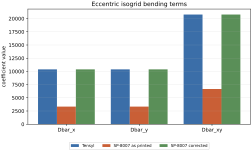
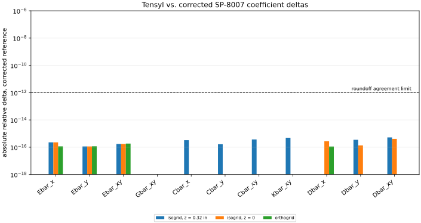
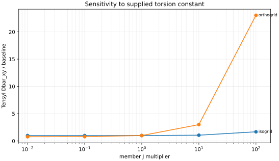

SP-8007 Reconciliation
Tensyl's orthogrid and isogrid stiffnesses agree with the elastic-constant formulas in NASA SP-8007, Section 4.1.2.6 to roundoff after restoring the eccentric axial-energy term omitted from the printed isogrid bending equations. This page shows the correction, the cases, and the effect of the selected rib torsion model.
Read This First
The isogrid equations in SP-8007 Eqs. 97-98 omit the explicit parallel-axis
EA z^2 bending terms. The same section includes eccentric
extensional-bending coupling terms, and the earlier general stiffener formulas
include the corresponding parallel-axis contribution. For a centroidal
stiffener offset from the reference surface, the EA z^2 bending energy is part
of the stiffness. Tensyl includes that term.
For the eccentric isogrid cases, this audit therefore reports two SP-8007 references:
- SP-8007 as printed;
- SP-8007 with the missing isogrid parallel-axis terms restored.
The correction used here is
and
With that correction, every coefficient in every case agrees with Tensyl to floating-point roundoff. The compared member kinematics are then consistent.
What Was Compared
The audit computes three sets of coefficients for each case. First it evaluates the SP-8007 equations as printed: ring-and-stringer orthogrids use Eqs. 82-91, and equilateral isogrids use Eqs. 92-98. Second it applies the isogrid correction above where it is needed. Third it computes Tensyl's default energy-homogenized ABD stiffness and extracts the same SP-8007-style barred coefficients from that matrix.
The coefficient mapping
uses axial e1 and circumferential e2. In particular, the modified twisting
coefficient is \(\bar D_{xy}=2D_{12}+4D_{66}\).
The named cases in the plots are:
| Plot label | Model | What it checks |
|---|---|---|
orthogrid |
Ring-and-stringer orthogrid with eccentric members, z = 0.32 in |
SP-8007 Eqs. 82-91 term by term, including coupling and modified twisting. |
isogrid, z = 0 |
Equilateral isogrid with centered members | The limit where the printed and corrected Eqs. 97-98 are the same. |
isogrid, z = 0.32 in |
Equilateral isogrid with eccentric members | Isolates the missing EA z^2 terms in SP-8007 Eqs. 97-98. |
All three cases use the same material, skin thickness, stiffener area,
out-of-plane inertia, torsion constant, and local spacing or pitch. The values
are E = 10.6e6 psi, nu = 0.33, t = 0.080 in, A = 0.030 in^2,
Iy = 1.20e-3 in^4, J = 2.50e-4 in^4, orthogrid spacings bs = 6 in and
br = 8 in, and isogrid pitch a = 6 in.
Correcting the Isogrid Typo
The plot below isolates the eccentric isogrid case. SP-8007 as printed omits
the eccentric axial energy in the bending terms. Once the EA z^2 terms are
restored, Tensyl and the corrected hand formula agree to roundoff.

The bars compare the same physical case three ways. The blue bar is Tensyl. The
orange bar is SP-8007 exactly as printed. The green bar is SP-8007 with the
EA z^2 correction restored. The green and blue bars lie together because the
missing printed term is the source of the large orange-bar gap.
Agreement Across Every Coefficient
With the printed isogrid omission corrected, the two calculations are the same
calculation written two ways. The plot below shows the largest difference for
each coefficient in each case, measured against the corrected SP-8007 value.
Every bar sits near 1e-16, the size of double-precision roundoff, and well
below the dashed 1e-12 line the report uses as its agreement limit. A missing
bar means the two values matched exactly.

SP-8007's orthogrid equations are
written family by family with scalar EA/b, EI/b, and GJ/b terms, while
Tensyl rotates each member's strain map into the panel frame and assembles an
8 x 8 energy matrix. The isogrid bending coefficients show it most clearly:
SP-8007's \(3\sqrt{3}\,EI/(4a) + \sqrt{3}\,GJ/(4a)\) falls straight out of the
member transforms at 0 and +/-60 degrees. Agreement to roundoff means the
member kinematics, the rotations, the density of each family, and the barred
coefficient mapping are all doing what the hand formulas do.
This verifies the equation implementation and coefficient translation for the listed cases. Modeling choices explains their shared affine member assumption.
Why Earlier Reports Disagreed
Reports published with Tensyl 0.3.1 and earlier turned on an optional
include_in_plane_bending extension for this study and showed an orthogrid
bending gap proportional to EIz. That extension has been removed. It let a
member's in-plane bending stiffness EIz resist plate curvature across the
member, but a member's axis stays straight in the panel plane under uniform
wall strain and curvature, so beam theory gives that term no energy. Nemeth's
first approximation, \(\chi_Z = 0\), says the same thing. The gap the old report
attributed to "cross-family in-plane bending" was stiffness that the physical
panel does not have.
A wide flange does resist bending across its width, but through its own plate
bending stiffness, roughly E w t^3 / 12 per unit length, not through
EIz = E t w^3 / 12. For a flange that is ten times wider than it is thick,
the two differ by a factor of one hundred. If that flange stiffness matters for
your panel, model it as part of the skin or with a detailed section model
rather than through the member EIz.
Which J Should Be Used?
BeamSection.GJ specifies the torsional stiffness of the member model. The
section guide
compares an open hat with a skin-closed shear-flow path and explains shared
skin-energy accounting. A restrained-warping value can be supplied from a
section or finite-element analysis for the corresponding boundary condition.
The plot sweeps the supplied member J while retaining all other inputs:

The plot shows how the chosen J affects the modified twisting coefficient. The orthogrid line moves strongly because its
modified twisting stiffness receives direct stringer and rib GJ terms. The
isogrid line moves less in this synthetic case because the same coefficient also
contains larger bending and corrected eccentric-axial contributions. A closed
cell or restrained-warping model can move a real design along this axis by large
factors.
Guidance
Use the data-handoff workflow to extract the barred constants. Record the reference surface, eccentricities, and torsion model with the result. The full ABD matrix remains available for analyses that use its complete coupling terms.
Artifacts
The committed evidence lives under the SP-8007 artifact directory:
comparison_table.jsonandcomparison_table.csvcontain the coefficient rows, including the printed and corrected SP-8007 references;summary.jsonrecords the worst corrected-reference term by case and the interpretation notes;torsion_sweep.jsonrecords theJsensitivity sweep;manifest.jsonrecords provenance for the run.
Regenerate the report data with:
uv run python validation/scripts/build_sp8007_reconciliation.py
The public mechanics references for this page are NASA SP-8007 and Nemeth's equivalent-plate treatise, both listed in References.